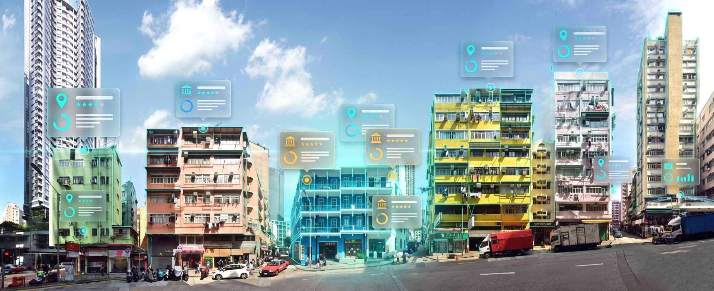
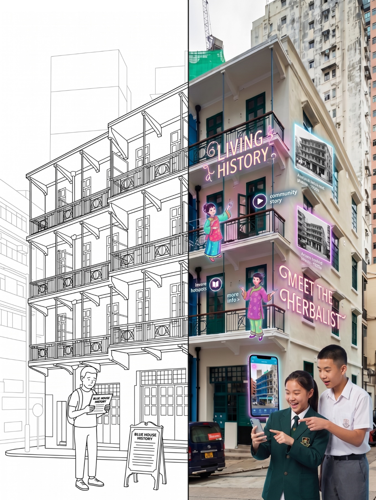
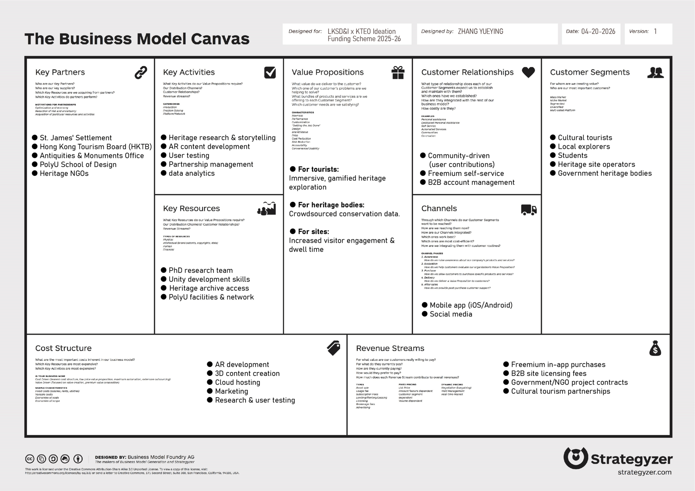
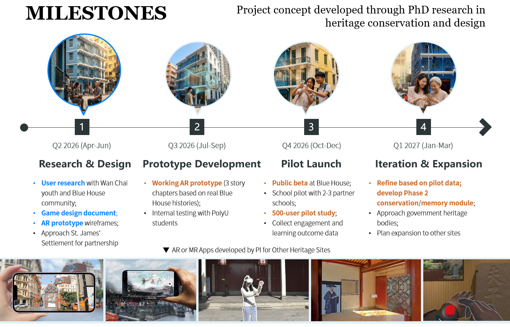

ARITAGE
An Augmented Reality Gaming Platform for Heritage Engagement and Conservation in Hong Kong.
Executive Summary
Project Overview
Hong Kong’s younger generation is increasingly disconnected from local cultural heritage. Conventional interpretation, including static signage, guided tours and exhibition panels, can struggle to engage digitally native young people seeking interactive, social and story-driven experiences. As older generations age, community knowledge and memories also risk being lost.
Solution
ARitage is a proposed location-based AR mobile game that transforms heritage sites into interactive spaces for social learning. Piloting at the Blue House Cluster, it brings Cantonese shophouse culture and stories of mid-20th-century community life into physical spaces through gamified quests, collectible narratives and intergenerational memory-sharing.
What Makes ARitage Different
Designed as a heritage game for Hong Kong’s next generation, ARitage combines gamified AR storytelling in Phase 1 with a planned crowdsourced intergenerational heritage-sharing component in Phase 2. Together, these approaches aim to encourage youth engagement and community conservation.
Objectives and Expected Outcomes
- Develop an AR prototype with three interactive story chapters at Blue House.
- Engage over 500 young users aged 15–30 during the first three months of the pilot.
- Establish partnerships with at least three schools or universities for heritage education.
- Develop a replicable design framework for AR heritage education and publishable research.
Project Gallery



Related Publications
Publications from this project will be added here.